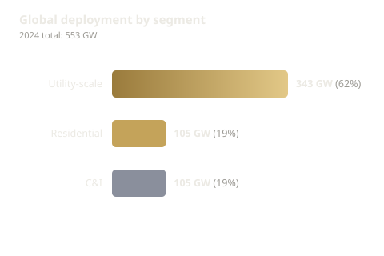
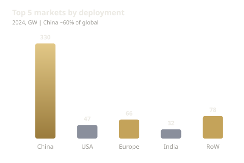
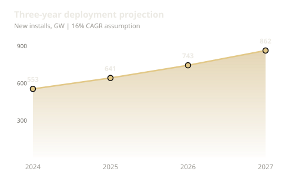
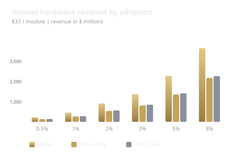
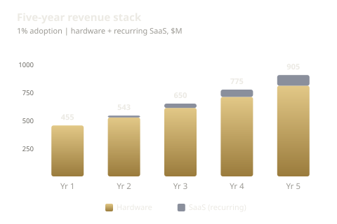

Solar Sense — Market Opportunity
Hardware–AI platform for next-generation solar module intelligence.
Context, opportunity, and path to scale—in five charts.
The market is large and split across segments
In 2024, global new solar installations reached 553 GW. Utility-scale accounts for 62%; distributed (residential and C&I) makes up the rest. This mix defines where module-level intelligence can add the most value.

China leads; global deployment is diversified
China represents about 60% of 2024 deployment. Europe, the US, India, and the rest of the world add a diversified base. For Solar Sense, this means a clear China opportunity plus multiple pilot and scale markets.

Growth is strong—the pipeline is expanding
At an assumed 16% CAGR, new installations rise from 553 GW (2024) to about 862 GW (2027). More modules each year mean a growing addressable market for hardware and SaaS.

Revenue scales with adoption—even low penetration matters
At $37 per module, 0.5–1% adoption already implies hundreds of millions in annual revenue (global or China-only). At 2–5%, the opportunity reaches billions. The chart shows why modest, credible adoption targets support a strong TAM story.

A realistic path: 1% adoption drives hardware and recurring SaaS
In a 1% adoption scenario, hardware revenue grows with the market each year. SaaS from prior-year installs builds the recurring base; by years 4–5, recurring revenue inflects. This is the story of how hardware plus software creates a durable business.

Loading analysis…